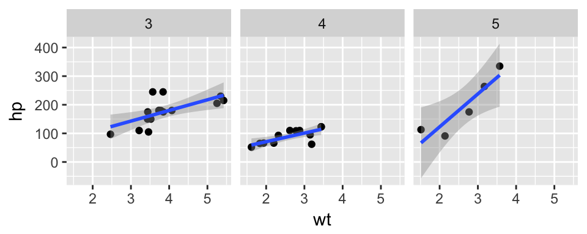

Layout
Amplify figures and accent narrative with layout
There are a variety of ways to layout elements included within Distill articles. This layout is controlled by a set of layout classes, which are in turn applied to R Markdown chunks using the distill.layout chunk option.
The default layout if distill.layout is not specified is l-body, which will cause content to span the width of the main article body:
l-body
For example, a plot with the default l-body layout would look like this:

For elements you want to display a little larger, try these:
l-middle
l-page
For example, here the l-middle layout is selected using the distill.layout chunk option:
```{r, distill.layout="l-middle", fig.width=6, fig.height=1.5}
ggplot(diamonds, aes(carat, price)) + geom_smooth() +
facet_grid(~ cut)
```
Note that when specifying an alternate distill.layout you should also specify an appropriate fig.width and fig.height for that layout.
All of these have an outset variant if you want to poke out from the body text a little bit. For instance:
l-body-outset
l-middle-outset
l-page-outset
Occasionally you’ll want to use the full browser width. For this, use l-screen. You can also inset the element a little from the edge of the browser by using the inset variant:
l-screen
l-screen-inset
Often you want to position smaller figures so as not to completely interrupt the flow of your text. For these cases we’ll add the side class to our layouts:
l-body side
l-middle side
l-page side
They are all floated to the right and anchored to the right-hand edge of the position you specify. By default, each will take up approximately half of the width of the standard layout position.
Here’s an example of floating a figure to the right using the distill.layout option:
```{r, distill.layout="l-page side", fig.width=5, fig.height=2}
ggplot(mtcars, aes(wt, hp)) + geom_point() +
geom_smooth(method = 'lm') +
facet_grid(~ gear)
```
The figure will be displayed to the right using the requested layout boundary. Note that we also specify values for fig.width and fig.height that are appropriate for this layout.
You can also use the same layouts with static images not generated by R code chunks. In this case, just add the requisite classes using standard markdown image class syntax:
{.l-middle}
{.l-page .side width=480}Note that for the side layout we also specify an explicit width which will constrain the image from overflowing the layout region.